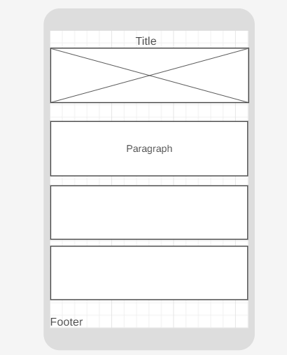
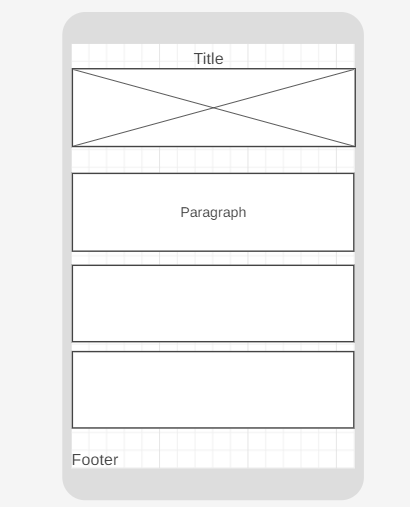
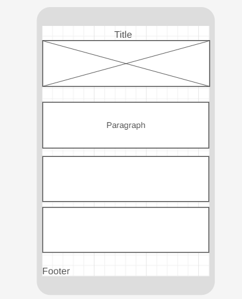

Wireframe
The wireframe view for the Chamber of Commerce site.
 

Site Name: Katy Chamber of Commerce
Reason: This site name was selected as it is the area in which I live. This name represents what the site will depict for all that visit it.
The Katy Chamber of Commerce website serves two primary purposes:
Primary Color: #d51315 (used for headings)
Secondary Color: #000000 (used for paragraphs)
Background Color: #ffffff (used for background)
Main Font: Roboto
Usage: This will be used for most of the site. (This may also change.)
The wireframe view for the Chamber of Commerce site.
